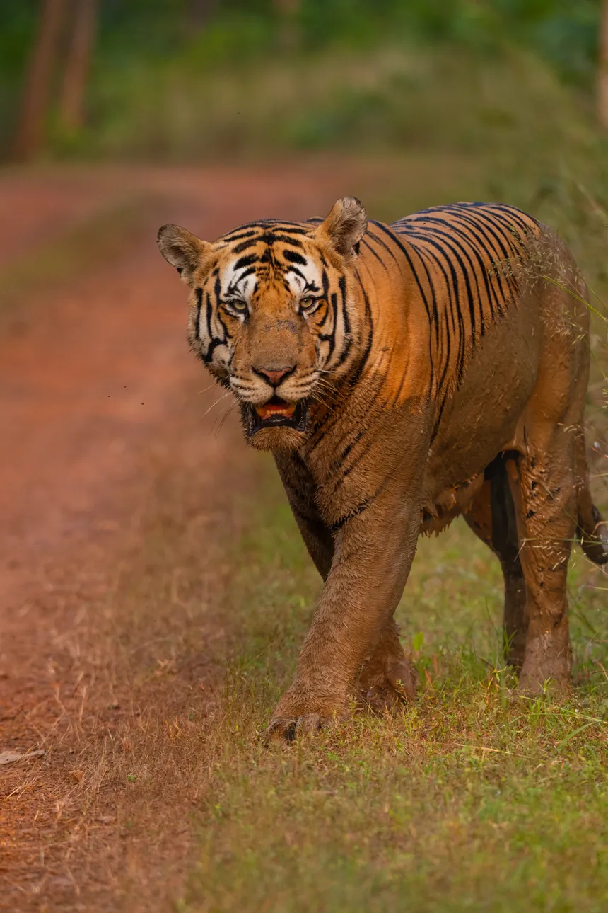

Mammals
- Bengal tiger
- Indian leopard
- Sloth bear
- Dhole (wild dog)
- Indian wolf
- Sambar
- Chital
- Chinkara
- Four-horned antelope
Panna · Madhya Pradesh · Central India
River cliffs, vultures and a forest finding its balance.
Get to know Panna
Panna feels different from the other great tiger forests. The terrain rises into rocky plateaus, drops into deep gorges and follows the Ken River through dry woodland. Vultures move above the cliffs. Deer appear near a grassy clearing. And a tiger, once lost from this landscape, is again part of its story.
Panna's tiger reintroduction is an important conservation success, but the reserve offers much more to notice. The river supports crocodilians and waterbirds, while the rocky landscape provides habitat for sloth bears, leopards and several antelope species.
A varied forest for visitors who enjoy wildlife, conservation and river landscapes.
Our journeys are about learning to notice the forest, not chasing wildlife for a photograph. There's always more to discover, even when a tiger stays out of sight.
Plan Your Journey
Wildlife, birds, flora and fauna
These animals and plants belong to the wider reserve ecosystem. They are not a checklist of guaranteed sightings. Your naturalist helps you notice what each safari offers.
Look closely and you may also notice butterflies, insects, fungi and other smaller forest life.
Birdwatching: Madhya Pradesh Tourism reports more than 200 bird species, including several vultures. The cliffs and river corridors give birdwatchers plenty to look for.
Habitat: Vindhyan plateaus, dry woodland, cliffs, grasslands and the Ken River. Different places within a reserve can feel like different forests.
Moments from the forest
A closer look at the animals, birds and landscapes featured in the field collections shared with Weavor. Take your time with the details.
Wildlife photograph
From this reserve collection
Wildlife photograph
From this reserve collection
Wildlife photograph
From this reserve collection
Wildlife photograph
From this reserve collection

Wildlife photograph
From the wider India wildlife collection
Photographs marked as part of the wider India wildlife collection are illustrative and are not represented as having been taken in Panna. Actual wildlife encounters vary by trip.
Understanding tiger country
These numbers describe the reserve and its habitats. They do not predict wildlife encounters or guarantee tiger sightings.
Panna | Dated assessment and habitat records
The 2022 camera-trap study identified 55 individual tigers in its Panna sampling area. This is a dated camera-recorded count, not a current reserve-wide population estimate or a sighting guarantee. Species figures are recorded biodiversity totals, not sightings expected on one trip. Read the 2022 report.
Vindhyan plateaus, dry woodland, cliffs, grasslands and the Ken River.
Understand the landscape
Panna's restoration programme reintroduced tigers after the reserve lost its resident population. It is a powerful example of conservation work that requires sustained habitat protection, monitoring and support. The Ken River adds another layer of ecology, with aquatic life, birds and crocodilians.
Plan with confidence
We'll help you plan around park regulations, permit availability and sensible travel connections. The right pace matters more than collecting as many drives as possible.
The forest department lists mid-October to mid-June as the best time to visit. Safari opening dates and river activities depend on current park schedules; confirm the exact dates and permits before travel.
Khajuraho is a common nearby travel gateway, often combined with a cultural visit. Connections and transfer time depend on the safari gate and accommodation chosen.
We suggest starting with 2 to 4 nights. We'll work out an itinerary that suits your pace, preferred accommodation and other places you hope to visit in India.
Safari permits, entry zones, vehicle arrangements, access restrictions and seasons are determined by the responsible forest authorities. We confirm current rules before you book.
Learn to read the jungle
When you travel with someone who knows the forest, the smallest observations can open up a whole new story.
Look for vultures along rocky slopes and high perches.
Learn how the Ken River supports reptiles, birds and mammals in a dry landscape.
Hear the story of the reserve’s tiger restoration and why reintroduction requires long-term protection.
Before you travel
Tigers were reintroduced after the resident population was lost. The population recovery is an example of sustained conservation and monitoring.
Panna’s river ecosystem supports gharials and mugger crocodiles, but river sightings and access depend on permitted routes and conditions. They are not part of every jeep safari.
Yes. Many travellers find the combination appealing because Panna offers a wildlife experience alongside Khajuraho’s historic temples.
Tigers are an important part of the reserve, but its river habitat, birds, rocky terrain and conservation story make the experience much broader.
No. Tigers and other animals are wild, and no sighting is guaranteed. We suggest allowing several drives and staying curious about everything the forest reveals.
Plan your Panna journey
Tell us about the wildlife you're most interested in, your preferred dates and who you're travelling with. We'll help you explore what a considered Panna journey could look like.
You don't need to have an itinerary worked out before you enquire.
plan@weavor.meOther forests to discover
The 2022 camera-trap study identified 55 individual tigers in its Panna sampling area. This is a dated camera-recorded count, not a current reserve-wide population estimate or a sighting guarantee. Figures for different reserves may involve different study boundaries or survey methods. Bird and plant figures are species records, not an indication of what one visitor will see. Park operating periods should be checked again before travel.